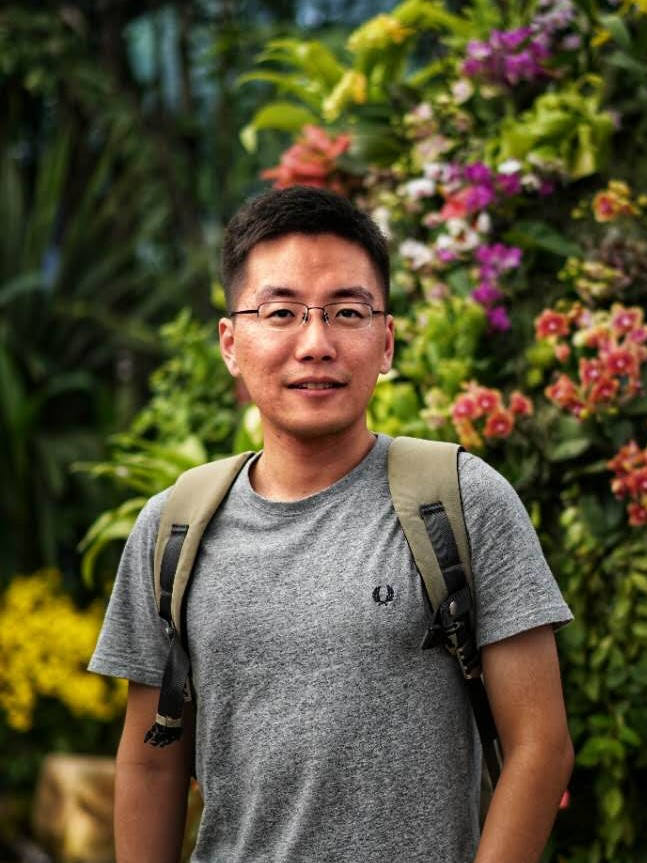

|  |
| Ph.D. Student | |
| Chinese Society of Forestry Student Member | |
College of Materials Science and Technology | |
| Beijing Forestry University, Beijing, PR China | |
|
Email: mannixwang@bjfu.edu.cn |
Mingjie Wang is currently a 2nd-year Ph.D. student at College of Materials Science and Technology of Beijing Forestry University, under the supervision of Prof. Jianmin Gao. He was admitted by Beijing Forestry University in 2016 as a M.S. student and converted into a Ph.D. student in 2018. Before that, he earned his B.E. degree from Northeast Forestry University in 2016, where he worked with Prof. Yingcheng Hu.
Biomorphic Silicon Carbide Porous Ceramics Originated from Wood
Wood Derived Self-standing Electrodes for Supercapacitors
Ph.D. in Wood Science and Technology, Beijing Forestry University, 2018-now (M.S. Leading to Ph.D.)
M.S. in Wood Science and Technology, Beijing Forestry University, 2016-2018
B.E. in Wood Science and Engineering, Northeast Forestry University, 2012-2016
Fabrication of Macroporous Biomorphic SiC from Cellulose Nanofibers Aerogel
M. Wang, F. Liu, Y. Chen, J. Gao.
Materials, 11(12):2430, 2018
Mechanical Properties and Microstructure of Reaction Sintering SiC Ceramics Reinforced with Graphene-based Fillers
F. Liu, M. Wang, Y. Chen, J. Gao, T. Ma.
Appl. Phys. A., 125(10):680, 2019
Thermal Stability of Graphene in Inert Atmosphere at High Temperature
F. Liu, M. Wang, Y. Chen, J. Gao.
J. Solid State Chem., 276:100-3, 2019
Preparation of Lignin-based Graphene Reaction-sintered Silicon Carbide and Its Bulletproof Application
NSF of China, Jan 2016-Dec 2019
Academic Innovation Award, Beijing Forestry University, Oct 2019
Academic Scholarship for Postgraduates, Beijing Forestry University, Oct 2016-Oct 2019 (continuously)
Outstanding Undergraduate Thesis Award, Northeast Forestry University, Jun 2016 (<3%)
TATA Scholarship, TATA Wooden Doors Group, Dec 2014
Teaching assistant at Beijing Forestry University for:
4 Bachelor Thesis 2017-2020 (one in progress)
2 National Undergraduate Innovation and Entrepreneurship Training Programs 2017 and 2019
Computer Science, including IoT, Linux and HTML, this website is self-made and hosted at Microsoft GitHub
History and culture of countries and their universities across the world
{kind=link}
{kind=link}